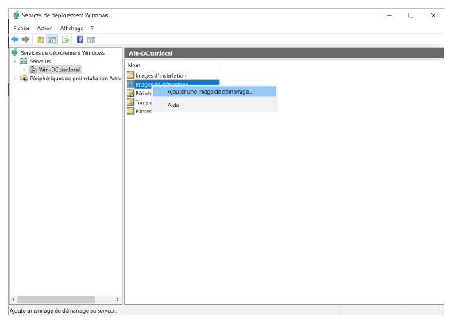

Ajout image de démarrage
Faire un clic droit sur Images d'installation puis ajouter une image de démarrage…

Aller chercher le fichier boot.wim qui se trouve sur le disque d'installation de Windows 10

Terminer l'ajout, l'image apparaît maintenant dans la liste.